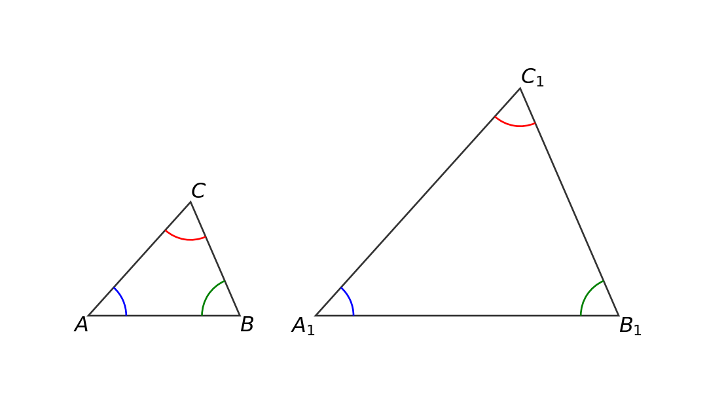
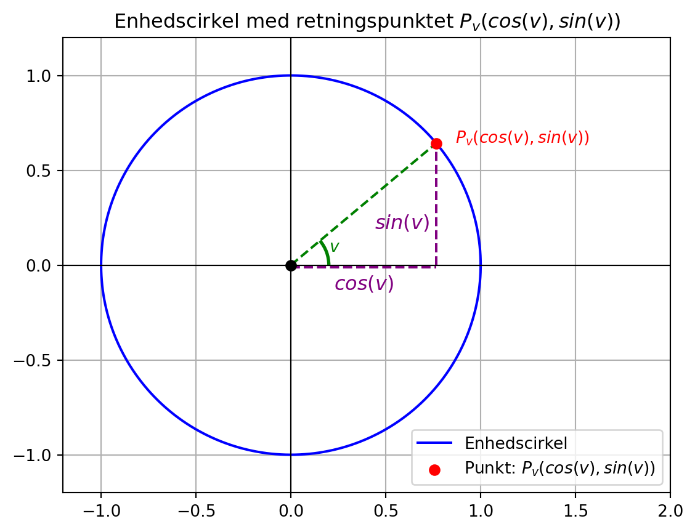
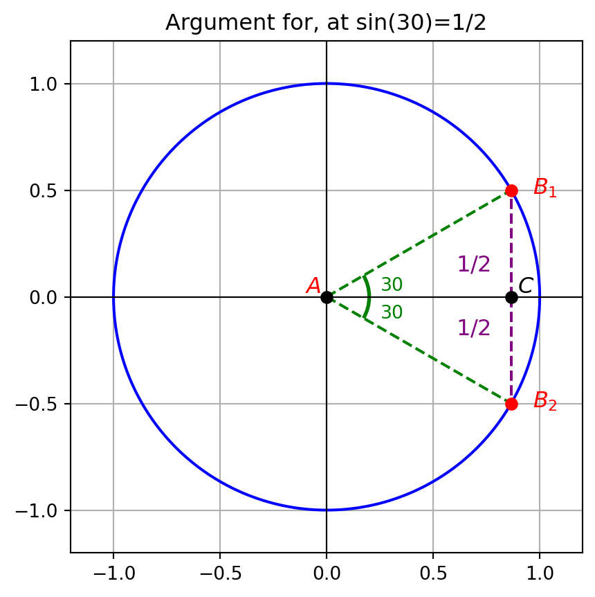
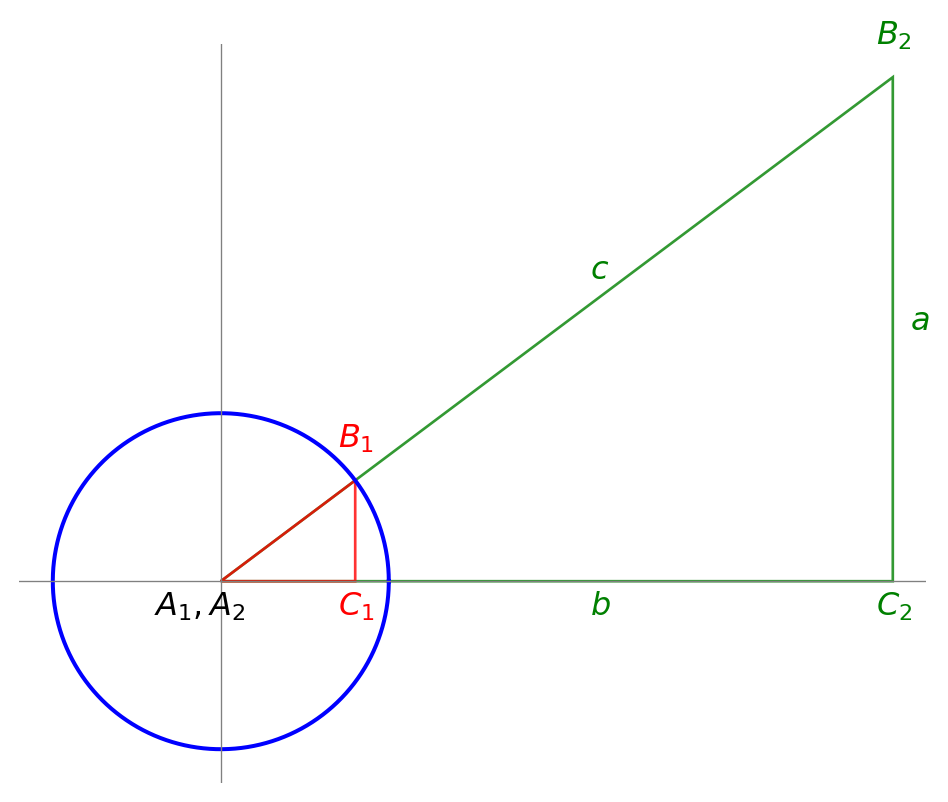
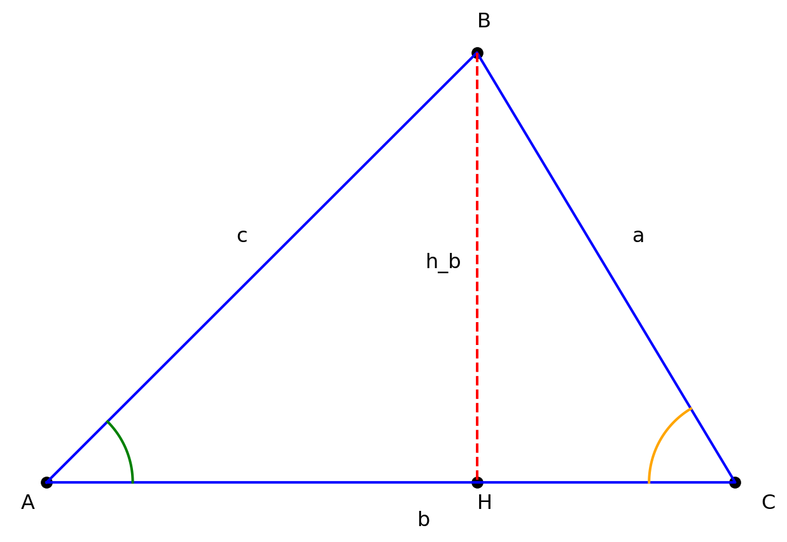
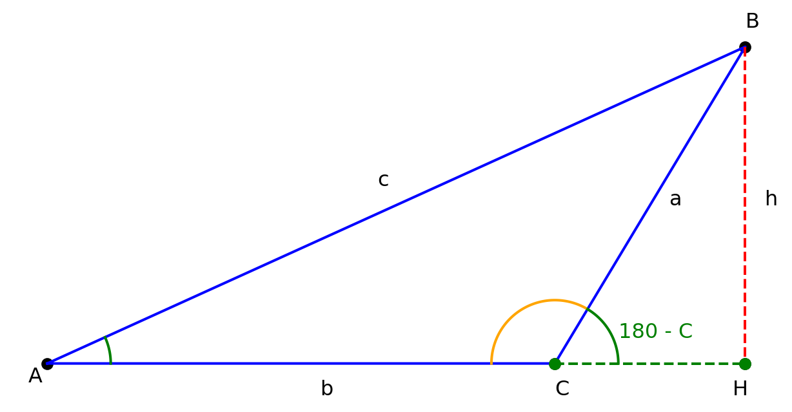
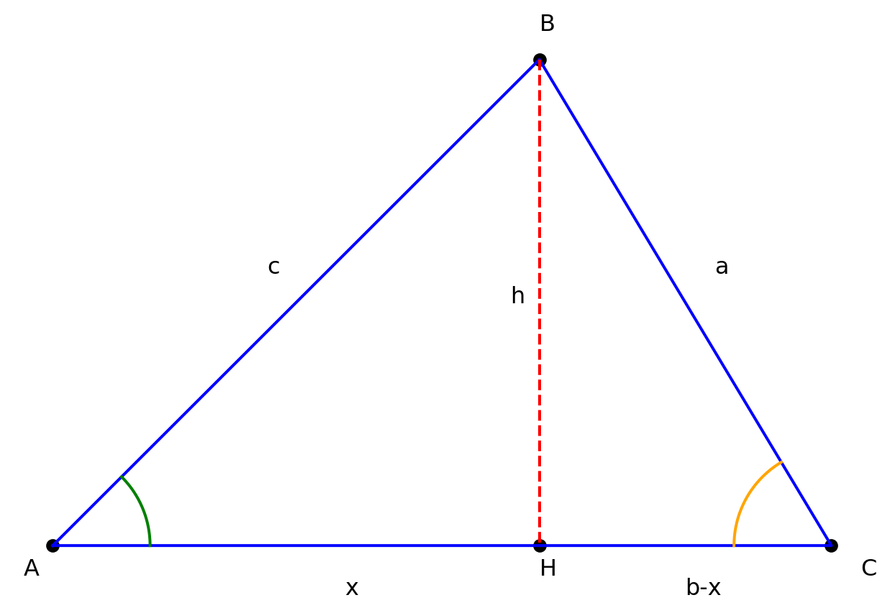
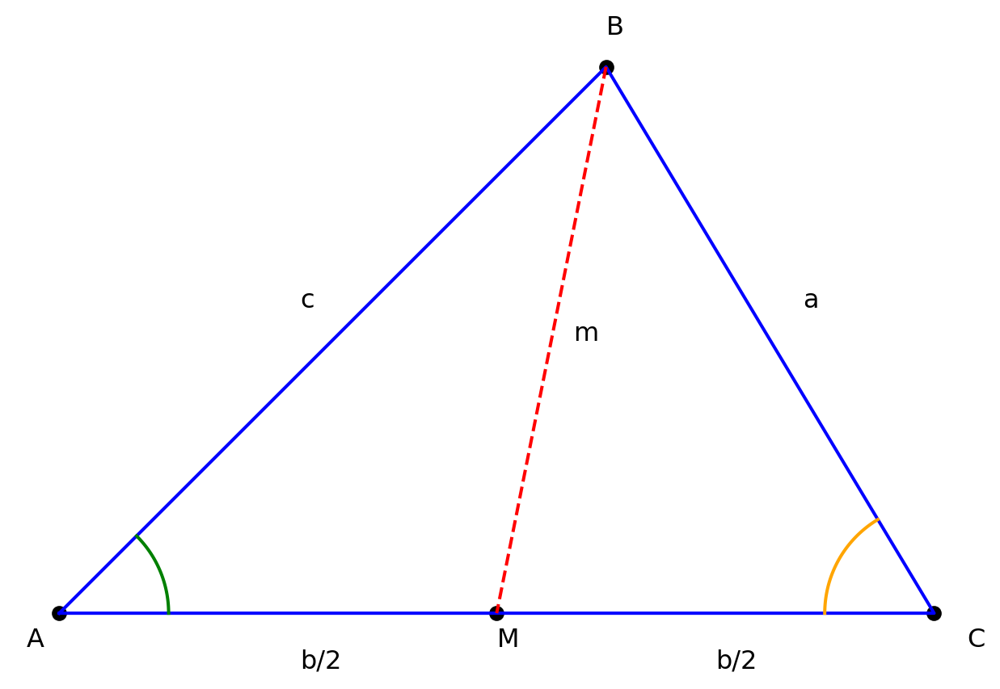

At to trekanter, \(\triangle ABC\) og \(\triangle A_1B_1C_1\), er ensvinklede betyder, at vinklerne parvist er ens, d.v.s \[
\angle A = \angle A_1, \: \angle B = \angle B_1, \: \text{og} \: \angle C = \angle C_1
\]
Code
import matplotlib.pyplot as pltfrom matplotlib.patches import Polygon, Arcimport numpy as np# Definer trekantens hjørnerA = (0, 0)B = (2, 0)C = (1.35, 1.5)# Definer trekantens hjørnerA1 = (3, 0)B1 = (7, 0)C1 = (5.7, 3)# Define vertices of the first triangletriangle1 = [A, B, C] # A right triangle# Define vertices of the second triangle triangle2 = [A1, B1, C1] # Create the figure and axisfig, ax = plt.subplots()# Navngiv hjørnerneax.text(A[0], A[1], '$A$', fontsize=12, color='k', ha='right', va='top')ax.text(B[0], B[1], '$B$', fontsize=12, color='k', ha='left', va='top')ax.text(C[0], C[1], '$C$', fontsize=12, color='k', ha='left', va='bottom')# Navngiv hjørnerneax.text(A1[0], A1[1], '$A_1$', fontsize=12, color='k', ha='right', va='top')ax.text(B1[0], B1[1], '$B_1$', fontsize=12, color='k', ha='left', va='top')ax.text(C1[0], C1[1], '$C_1$', fontsize=12, color='k', ha='left', va='bottom')# Tilføj den første trekantpoly1 = Polygon(triangle1, closed=True, fill=False, edgecolor='k', alpha=0.8)ax.add_patch(poly1)# Tilføj den anden trekantpoly2 = Polygon(triangle2, closed=True, fill=False, edgecolor='k', alpha=0.8)ax.add_patch(poly2)# Funktion til at tilføje en vinkel med Arcdef draw_angle(ax, center, p1, p2, radius=0.5, color='red'):# Beregn vinkelorientering angle1 = np.degrees(np.arctan2(p1[1] - center[1], p1[0] - center[0])) angle2 = np.degrees(np.arctan2(p2[1] - center[1], p2[0] - center[0]))# Juster vinkler til Arc start_angle =min(angle1, angle2) end_angle =max(angle1, angle2)# Tegn cirkelstykke arc = Arc(center, width=2*radius, height=2*radius, theta1=start_angle, theta2=end_angle, color=color) ax.add_patch(arc)# Tilføj vinklerne i den lille trekantdraw_angle(ax, A, B, C, radius=0.5, color='blue') # Vinklen ved Adraw_angle(ax, B, A, C, radius=0.5, color='green') # Vinklen ved Bdraw_angle(ax, C, A, B, radius=0.5, color='red') # Vinklen ved C# Tilføj vinklerne i den lille trekantdraw_angle(ax, A1, B1, C1, radius=0.5, color='blue') # Vinklen ved Adraw_angle(ax, B1, A1, C1, radius=0.5, color='green') # Vinklen ved Bdraw_angle(ax, C1, A1, B1, radius=0.5, color='red') # Vinklen ved C# Set the axis limitsax.set_xlim(-1, 8)ax.set_ylim(-1, 4)# Fjern akserneplt.axis('off')# Set aspect ratio to equalax.set_aspect('equal')# Add grid for better visualizationax.grid(True)# Show the plotplt.show()

Sætning 9.2: Skalafaktor
Hvis to trekanter er ensvinklede, er forholdet mellem sidelængderne ens.
Dette forhold kaldes skalafaktoren og betegnes som regel med k, d.v.s
\[
k=\frac{|A_1B_1|}{|AB|} = \frac{|A_1C_1|}{|AC|} = \frac{|B_1C_1|}{|BC|}
\] Vi har derfor, at
\[
\begin{aligned}
|A_1B_1| = k \cdot |AB|, \quad |A_1C_1| = k \cdot |AC| \quad \text{og} \quad |B_1C_1| = k \cdot |BC|
\end{aligned}
\] Ensvinklede trekanter kaldes derfor også proportinale eller ligedannede.
9.2 Enhedscirkel
Definition 9.3: Cosinus og Sinus
En enhedscirkel er en cirkel med radius 1 og centrum i origo \((0,0)\).
En vinkel \(v\) i enhedscirklen har retningspunkt \(P_v\). Se figuren herunder.
I retningspunktet er koordinatsættet defineret som \((cos(v), sin(v))\).
En retvinklet trekant i enhedscirklen med radius tegnet i 1. kvadrant som hypotenuse har altså katetelængder \(cos(v)\) og \(sin(v)\)

Hvordan funktionerne \(\sin(v)\) og \(\cos(v)\) præcist “virker” vil vi ikke komme ind på. I stedet vil vi begynde med et argument for, hvordan vi kan beregne \(\sin(v)\) og \(\cos(v)\) for specielle vinkler. Herved kan vi opskrive den første sætning og give et geometrisk bevis for dets rigtighed.
Beviset for \(\sin(30) = \frac{1}{2}\) klares geometrisk med figuren herunder.

Hvis man tegner en retvinklet trekant med en vinkel på \(30^\circ\) i enhedscirklen og spejler denne trekant i \(x\)-aksen får man en trekant, \(AB_1B_2\), hvor alle vinklerne er \(60^\circ\)
I en sådan trekant er alle siderne lige lange.
Da \(|AB_1|=|AB_2| = 1\) (disse sider er radii i enhedscirklen) må der gælde, at \(|B_1B_2|=1\).
Da den vinkelrette afstand fra \(B_1\) til \(x\)-aksen pr. definition er \(\sin(30)\), må der gælde at \(\sin(30) = |B_1C| = \frac{|B_1B_2|}{2}=\frac{1}{2}\)
Vi kan vise, at \(\cos(30) = \frac{\sqrt{3}}{2}\) ved at bruge Pythagoras Sætning, som vi vil bevise nedenunder.
Pythagoras Sætning i enhedscirklen siger, at
\[
\sin(v)^2 + \cos(v)^2 = 1^2
\] Notationsmæssigt skrives dette ofte som
\[
\sin^2(v) + \cos^2(v) = 1
\] Hvis \(\sin(30) = 1/2\) må der gælde, at
\[
\begin{aligned}
\left(\frac{1}{2}\right)^2 + \cos^2(30) &= 1 \\
\frac{1}{4} + \cos^2(30) &= 1 \\
\cos^2(30) &= 1 - \frac{1}{4} \\
\cos^2(30) &= \frac{3}{4} \\
\cos(30) &= \sqrt{\frac{3}{4}}
\end{aligned}
\] Da vi er i første kvadrant, er der tale om den positive kvadratrod. Endvidere kan vi bruge en potensregneregel (eksponenten er lig 1/2), når vi taler om kvadratrødder, så vi kan skrive
En retvinklet trekanten som vist på figuren ovenfor har én ret vinkel (90 grader). Typisk er den placeret i \(C\)-hjørnet i en \(ABC\)-trekant.
9.3.1 Pythagoras Sætning
Sætning 9.5
I en retvinklet trekant, hvor \(C\) er den rette vinkel gælder følgende lighed:
\[
a^2+b^2 = c^2
\]
Eksempel 9.6: Berening af hypotenusen
I en trekant med katetelængderne \(a = 3\) og \(b = 4\) kan vi beregne hypotenusen:
\[
c = \sqrt{a^2 + b^2} = \sqrt{3^2 + 4^2} = 5
\]
9.3.2 Bestemmelse af spids vinkel i retvinklet trekant
I retvinklede trekanter er en af vinklerne altid ret og de to andre vinkler er spidse. For det meste betegnes den rette vinkel \(C\) og de spidse vinkler betegnes \(A\) og \(B\).

Hvis vi lægger en vilkårlig retvinklet trekant ind i enhedscirklen som vist på figuren herunder kan vi redegøre for, at der må gælde, at
\[
\begin{aligned}
a = c \cdot \sin(A) \\
b = c \cdot \cos(A)
\end{aligned}
\] Den lille røde retvinklede trekant ligger i enhedscirklen og hypotenuselængden er 1 og katetelængderne er som tidligere vist lig \(\cos(v)\) og \(\sin(v)\). I den større grønne trekant er hypotenuselængden \(c\).
De to trekanter, den røde og den grønne, er ensvinklede, så der må gælde, at skalafaktoren er forholdet mellem ensligegnde sider \[
k = \frac{c}{1} = \frac{a}{\sin(A)} = \frac{b}{\cos(A)}
\] Heraf fås de to ligninger
\[
\begin{aligned}
c = \frac{a}{\sin(A)} \Leftrightarrow a = c \cdot \sin(A) \\
c = \frac{b}{\cos(A)} \Leftrightarrow b = c \cdot \cos(A)
\end{aligned}
\] Resultatet kan vi samle i følgende sætning, som vi netop har redegjort for.
Sætning 9.7: Bestemmelse af sidelængder i retvinklet trekant
Hvis man i en retvinklet trekant kender hypotenuselængden \(c\) og en spids vinkel, \(A\), kan de to katetelængder beregnes ved
\[
\begin{aligned}
a &= c \cdot \sin(A) \\
b &= c \cdot \cos(A)
\end{aligned}
\]
Hvis vi isolerer kateterne \(a\) og \(b\) i ovenstående sætning, kan vi finde udtryk til bestemmelse af en spids vinkel i en retvinklet trekant
\[
\begin{aligned}
a &= c \cdot \sin(A) \Leftrightarrow \sin(A) = \frac{a}{c} \Leftrightarrow A = \sin^{-1}\left(\frac{a}{c}\right)\\
b &= c \cdot \cos(A) \Leftrightarrow \cos(A) = \frac{b}{c} \Leftrightarrow A = \cos^{-1}\left(\frac{b}{c}\right)
\end{aligned}
\]
Med \(\sin^{-1}(A)\) forståes den omvendte funktion til \(\sin(A)\), sådan at \(\sin^{-1}(\sin(A)) = A\) og \(\sin(\sin^{-1}(A)) = A\). Det samme gør sig gældende for \(\cos(v)\)
Hvis man kender en af koordinaterne til retningspunktet \(P_v(x,y)\), kan man altså finde den tilsvarende vinkel ved \(v=\cos^{-1}(x)\) eller \(v = \sin^{-1}(y)\).
De trigonometriske funktioner defineres i en retvinklet trekant som:
Sætning 9.8: Bestemmelse af en spids vinkel i en retvinklet trekant
Hvis man i en retvinklet trekant kender hypotenuselængden og mindst en af katetelængderne, kan man bestemme en spids vinkel ved
\[
\begin{aligned}
A = \sin^{-1}\left(\frac{a}{c}\right)\\
A = \cos^{-1}\left(\frac{b}{c}\right)
\end{aligned}
\]
Endvidere gælder der pr. definition, at \(\tan(v) = \frac{\sin(v)}{\cos(v)}\)
Indsætter vi udtrykkene for \(\sin(A)\) og \(\cos(A)\) får vi
\[
\tan(A) = \frac{\sin(A)}{\cos(A)} = \frac{\frac{a}{c}}{\frac{b}{c}} = \frac{a}{b}
\] og dermed kan vi bestemme en spids vinkel i en retvinklet trekant, når vi kender de to kateter:
\[
A = \tan^{-1}\left(\frac{a}{b}\right)
\]
9.4 Vilkårlige trekanter
For vilkårlige trekanter snakker vi om retvinklede, spidsvinklede og stumpvinklede trekanter.
Ofte behandler vi de retvinklede trekanter for sig, som vi har gjort ovenfor.
I dette afsnit vil se på trekanter med kun spidse vinkler (alle vinkler er under 9 grader) eller stumpvinklede trekanter (en\(^*\) af vinklerne er over 90 grader).
\(^*\) Eftersom summen af vinklerne i en trekant er 180 grader, kan man ikke have en trekant med mere end én stump vinkel.
Hvis vi begynder med en spidsvinklet trekant som skitseret i figuren nedenfor, kan vi altid opdele den i to retvinklede trekanter ved at tegne en højde fra den ene vinkel vinkelret på den modsatte side.
9.4.1 Arealformlen

Vi har derfor den retvinklede trekant \(ABH\) og \(BCH\)
Kender vi vinkel \(A\), markeret med grønt, i \(\triangle ABH\) og siden \(c\), kan vi beregne højden ved
\[
h_b = c \cdot \sin(A)
\] Herved kan vi beregne arealet i hele trekanten, såfremt vi også kender siden \(b\). Vi betegner arealet med symbolet \(T\).
\[
T = \frac{1}{2} \cdot h \cdot g = \frac{1}{2} \cdot h_b \cdot b = \frac{1}{2} \cdot c \cdot \sin(A) \cdot b = \frac{1}{2} \cdot b \cdot c \cdot \sin(A)
\] Kender vi i stedet vinkel \(C\) markeret med orange og siden \(a\) kan vi også beregne højden, \(h_b\) ved
\[
h_b = a \cdot \sin(C)
\] Hvis vi igen betragter siden \(b\) som grundlinjen i trekant \(ABC\) kan vi igen opskrive et udtryk til beregning af arealet.
\[
T = \frac{1}{2} \cdot h_b \cdot b = \frac{1}{2} \cdot a \cdot \sin(C) \cdot b = \frac{1}{2} \cdot a \cdot b \cdot \sin(C)
\]
Ligeså kan vi ved at tegne en anden højde i trekanten vise\(^*\), at arealet også kan beregnes ved
\(^*\) En god øvelse for læseren af dette til at forstå de enkelte skridt i udledningen af arealformlen.
\[
T = \frac{1}{2} \cdot a \cdot c \cdot \sin(B)
\]
Vi kan samle ovenstående udledning i følgende sætning
Sætning 9.9: Arealformlen
Arealet af en vilkårlig trekant \(ABC\) kan beregnes ved
\[
T = \frac{1}{2} \cdot a \cdot b \cdot \sin(C) = \frac{1}{2} \cdot a \cdot c \cdot \sin(B) = \frac{1}{2} \cdot b \cdot c \cdot \sin(A)
\]
Men hør nu, kan man fristes til at sige. Gælder det også for stumpvinklede trekanter. Vi kan jo begynde ved at skitsere en og tegne højden i den.
Code
import matplotlib.pyplot as pltimport numpy as npdef plot_triangle_with_height_and_angles():# Definer trekantens hjørnepunkter A = (0, 0) # Punkt A B = (11, 5) # Punkt B C = (8, 0) # Punkt C# Beregn koordinaterne for højden fra B til siden AC# Retning af vektoren AC AC_vector = np.array([C[0] - A[0], C[1] - A[1]]) AC_unit_vector = AC_vector / np.linalg.norm(AC_vector) # Enhedsvektor langs AC# Projektion af B på linjen AC AB_vector = np.array([B[0] - A[0], B[1] - A[1]]) proj_length = np.dot(AB_vector, AC_unit_vector) # Længden af projektionen proj_point = np.array(A) + proj_length * AC_unit_vector # Projektionen på AC H =tuple(proj_point) # Højdefodpunktet H# Tegn trekanten plt.figure(figsize=(8, 6)) plt.plot([A[0], B[0], C[0], A[0]], [A[1], B[1], C[1], A[1]], 'b-', label="Trekant ABC") # Trekantens sider# Tegn højden fra B til AC plt.plot([B[0], H[0]], [B[1], H[1]], 'r--', label="Højde fra B") # Højden plt.scatter([A[0], B[0], C[0], H[0]], [A[1], B[1], C[1], H[1]], color='black') # Hjørner og højdepunkt# Markér vinkler med cirkelstykkerdef draw_angle_marker(center, radius, theta1, theta2, color): angles = np.linspace(np.radians(theta1), np.radians(theta2), 100) x = center[0] + radius * np.cos(angles) y = center[1] + radius * np.sin(angles) plt.plot(x, y, color)# Vinkel i A angle_A = np.degrees(np.arctan2(B[1] - A[1], B[0] - A[0])) angle_C = np.degrees(np.arctan2(C[1] - A[1], C[0] - A[0])) draw_angle_marker(A, 1, 0, angle_A, 'g') # Grøn cirkelstykke i A# Vinkel i C angle_C_top = np.degrees(np.arctan2(A[1] - C[1], A[0] - C[0])) angle_C_bottom = np.degrees(np.arctan2(B[1] - C[1], B[0] - C[0])) draw_angle_marker(C, 1, angle_C_top, angle_C_bottom, 'orange') # Orange cirkelstykke i C draw_angle_marker(C, 1, 0, angle_C_bottom, 'g')# Orange stiplede cirkelstykke i 180-C# Annoter punkterne plt.text(A[0]-0.3, A[1] -0.3, "A", fontsize=12) plt.text(B[0], B[1] +0.3, "B", fontsize=12) plt.text(C[0], C[1] -0.5, "C", fontsize=12) plt.text(H[0]-0.2, H[1] -0.5, "H", fontsize=12)# Annoter siderne plt.text((C[0]+B[0])/2+0.3, (B[1]-C[1])/2, "a", fontsize=12) plt.text((A[0] + C[0])/2+0.3, -0.5, "b", fontsize=12) plt.text(B[0]/2-0.3, B[1]/2+0.3, "c", fontsize=12) plt.text(B[0]+0.3, B[1]/2, "h", fontsize=12)# Annoter resten af den stumpe vinkel plt.text(C[0] +1, C[1] +0.4, "180 - C", color ='g', fontsize=12)# plot linjen mellem C og H xval = [C[0], H[0]] yval = [C[1], H[1]] plt.plot(xval, yval, 'go', linestyle="--")# Opsætning af plot plt.gca().set_aspect('equal', adjustable='box') plt.axis('off') plt.grid(True) plt.show()# Kald funktionen for at plotte trekantenplot_triangle_with_height_and_angles()

Tegner vi højden fra \(B\) i en stumpvinklet trekant, ligger den uden for trekanten som vist på figuren ovenfor. Hvis vi stadig kender siden \(a\) og vinklen \(C\), kan vi (stadig) beregne højden ved \[
h = a \cdot \sin(180 - C) = a \cdot \sin(C)
\] fordi \(\sin(180-v) = \sin(v)\) som vi tidligere har vist i enhedscirklen.
Så for stumpvinklede trekanter gælder de samme arealformler som for spidsvinklede trekanter.
Bemærk
Hvis en trekant er retvinklet bliver den generelle arealformel til
\[
T = \frac{1}{2} \cdot a \cdot b \cdot \sin(C) = \frac{1}{2} \cdot a \cdot b \cdot 1 = \frac{1}{2} \cdot a \cdot b
\] da \(\sin(90)=1\).
Arealet er altså det halve af længden af den ene katete gange længden af den anden katete som forventet.
9.4.2 Sinusrelationen
Hvis man tager de tre udgaver af arealformlen og dividerer dem alle med \(\frac{1}{2}\cdot a \cdot b \cdot c\) får man
\[
\begin{aligned}
\frac{\frac{1}{2} \cdot a \cdot b \cdot \sin(C)}{\frac{1}{2}\cdot a \cdot b \cdot c} &= \frac{\frac{1}{2} \cdot a \cdot c \cdot \sin(B)}{\frac{1}{2}\cdot a \cdot b \cdot c} = \frac{\frac{1}{2} \cdot b \cdot c \cdot \sin(A)}{\frac{1}{2}\cdot a \cdot b \cdot c} \\
\frac{\sin(C)}{c} &= \frac{\sin(B)}{b } = \frac{\sin(A)}{a}
\end{aligned}
\]
Dette kaldes Sinusrelationen. Den reciprokke udgave af Sinusrelationen, gælder også, hvilket er sammenfattet i følgende sætnign
Vi gennemfører først beviset for en spidsvinklet trekant. Vi genbruger en figur fra før med den modifikation, at linjen \(b\) deles op i to delstykker med længderne \(|AH|=x\) og \(|CH|=b-x\).

I den retvinklede trekant \(ABH\) kan vi opskrive Pythagoras Læresætning og isolere \(h^2\), d.v.s
\[
h^2+x^2 = c^2 \Leftrightarrow h^2=c^2-x^2
\]
I den retvinklede trekant \(BCH\) gør vi det samme, d.v.s vi skriver
Da vi har to lignininger, hvor højresiderne begge er lig \(h^2\), kan vi skrive
\[
a^2 - (b-x)^2 = c^2 - x^2 \Leftrightarrow a^2 = c^2 - x^2 + (b-x)^2
\] Vi bruger nu kvadratsætningen \((a-b)^2 = a^2 + b^2 - 2ab\) på højre side og reducerer
\[
a^2 = c^2 - x^2 + (b-x)^2 = c^2 - x^2 + b^2+x^2 -2bx = b^2 + c^2 - 2bx
\] Betragter vi igen trekanten kan ve se, at \(x\) er den hosliggende katete i den retvinklede trekant \(ABC\) og derfor kan vi jf. regneregler for retvinklede trekanter skrive \(x=c \cdot \cos(A)\). Indsættes dette i ovenstående får vi
\[
a^2 = b^2 + c^2 - 2bc\cos(A)
\] Dette kaldes Cosinusrelationen. På samme måde kan argumentere for, at vi kan skrive et udtryk op for \(b^2\) og \(c^2\), og resultatet samler vi følgende sætning
I alle tre ligninger kan vi isolere cosinus til vinklen, hvilket gør, at hvis vi kender alle tre sider i en trekant, kan vi beregne alle tre vinkler. Eksempelvis kan vi i den første ligning isolere \(\cos(A)\).
\[
\begin{aligned}
a^2 &= b^2 + c^2 - 2bc\cos(A) \Leftrightarrow \\
2bc\cos(A) &= b^2 + c^2 - a^2 \Leftrightarrow \\
\cos(A) &= \frac{b^2 + c^2 - a^2}{2bc}
\end{aligned}
\] Udfører vi lignende omrokeringer i de to andre ligninger får vi følgende sætning
Vi kan bruge ovenstående udgaver af Cosinusrelationen til at lave et bevis for, hvordan man finder længden af en median. Vi modificerer figuren fra før en smule og bytter højden ud med en median.

Bruger vi cosinusrelationen til at beregne vinkel \(A\) både v.h.a trekant \(ABC\) og trekant \(ABM\) får vi følgende ligninger
\[
\begin{aligned}
\cos(A) &= \frac{b^2+c^2-a^2}{2bc} \\
\cos(A) &= \frac{(b/2)^2+c^2-m_b^2}{2 \cdot (b/2) \cdot c}
\end{aligned}
\] Da begge venstresider naturligvis er ens, må de to højresider også være ens
\[
\frac{(b/2)^2+c^2-m_b^2}{2 \cdot (b/2) \cdot c} = \frac{b^2+c^2-a^2}{2bc} \\
\] Hvis vi først forlænger højre brøk med 2 og dernæst ganger igennem med \(2bc\), når vi frem til følgende ligning
\[
\begin{aligned}
\frac{b^2+c^2-a^2}{2bc} &= \frac{(b/2)^2+c^2-m_b^2}{2 \cdot (b/2) \cdot c} \Leftrightarrow \\
\frac{b^2+c^2-a^2}{2bc} &= \frac{2 \cdot(b/2)^2+2c^2-2m_b^2}{2bc} \Leftrightarrow \\
b^2+c^2-a^2 &= 2 \cdot(b/2)^2+2c^2-2m_b^2
\end{aligned}
\] Herfra handler det om at isolere \(m_b\).
\[
\begin{aligned}
b^2+c^2-a^2 &= 2 \cdot(b/2)^2+2c^2-2m_b^2 \Leftrightarrow \\
b^2+c^2-a^2 &= 2 \frac{b^2}{4}+2c^2-2m_b^2 \Leftrightarrow \\
b^2+c^2-a^2 &= \frac{b^2}{2}+2c^2-2m_b^2 \Leftrightarrow \\
2m_b^2 &= \frac{b^2}{2}+2c^2 - b^2 -c^2 + a^2 \Leftrightarrow \\
4m_b^2 &= 2a^2 + 2c^2 -b^2 \Leftrightarrow \\
2m_b &= \sqrt{2a^2 + 2c^2 -b^2} \Leftrightarrow \\
m_b &= \frac{1}{2} \cdot \sqrt{2a^2 + 2c^2 -b^2}
\end{aligned}
\] På samme måde kan vi argumentere for formlerne for \(m_a\) og \(m_c\) og sammefatte resultatet i følgende sætning